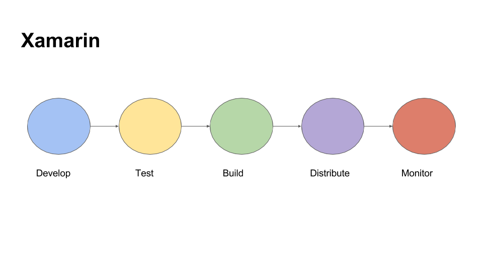

Xamarin Dev Days in Warsaw - 24 September, 2016
Tags: xamarin, dev days
Hi All, it is my overview of Xamarin Dev Days - short summary. Hope it will be useful to create an impression what you can expect from this event.
My stream technology is server-side .NET or ASP.NET MVC. My current project is on .NET platform, the main technology is Windows Workflow Foundation and I am not using Xamarin platform. But I had a small experience in Xamarin that I got during working on my previous project.
Some time ago I had a chance to visit Xamarin Dev Days event in Warsaw. It was one day event in Warsaw Microsoft office. There were two part: the first one is generic information about Xamarin ecosystem and Azure Mobile Apps. The second one is hands on lab. So this presentation has been created to summarize and do a short recap mentioned event.
Agenda:
- Introduction to Xamarin
- Xamarin.Forms
- Azure Mobile Apps
- Sample application
- Resources

The first thing that you should keep in mind when you are talking about Xamarin is that you are able to write application not using Visual Studio on Windows only, but also Xamarin Studio on Mac. Basically, as I understand, usually people are using Visual Studio to develop Android and Phone applications and Xamarin Studio on Mac to develop IOS application. But, of course, the team is using one code base. The reason of this approach, that it is much more quicker to build IOS application on MAC directly, without remote building using Visual Studio on Windows.
The second thing is that Xamarin is not only about developing cross-platform applications using Visual Studio or Xamarin Studio, but Xamarin also provides possibility to test you application on various number of devices using Xamarin Cloud. As you can imagine, it is very expensive to buy all set of mobile devices for testing, so this cloud allows you to run your application on thousand of real devices in the cloud, analyze detailed test reports with results, screenshots, and performance metrics. Also it allows you to measure performance of your application. Sounds very cool, but there was a question from Xamarin Dev Days presenter about if there is someone who is using this cloud and nobody answered.
The third thing is about building and continuous integration. Actually it is not about Xamarin but aboutTFS(Team Foundation Server). You are able to install it on your private server or it is possible to use Visual Studio Online service from Microsoft. It is free for small teams. It provides opportunity to work with your code (git), use agile board to organize your work, set up your continuous integration project (pure version of team city), create test cases.
The last one is about distributing and monitoring. I can’t say a lot about distributing as I have never put any application to stores. As for monitoring, there is Xamarin Insight. It is the same approach as Visual Studio Application Insights. It is an extensible analytics service that helps you understand the performance and usage of your live mobile application. It's designed for developers, to help you continuously improve the performance and usability of your app. It allows:
- see user sessions in real time
- see which users are being affected by which errors
- see stacktraces for each exception
- see device stats for each exception (operating system, app version, network status, device orientation, jalbreak status, and bluetooth status)
- see advanced reporting and filtering of aggregate exception statistics
- setup webhooks for triggering actions on certain Insights events
- integrate with third-party services (Campire, Github, HipChat, Jira, PivotalTracker, and Visual Studio Online)
Approaches:
- Separate solutions for each platform (Android, IOS, Windows)
- Many projects, many languages, many teams
- One universal solution (JS + HTML + CSS) - Cordova
- Slow performance, limited native API
- Xamarin approach (shared code + platform specific UI)
- Good performance, almost all native API
- ReactNative and NativeScript
- Only Android and IOS (UWP in future)
Here I want to show the main ways to build mobile application.
- Of course, firstly it is native apps. It is clear. Swift, object-C for IOS, java is for Android, C# is for Windows Phone. It means you should have and support many projects and many teams. It is a good option if you are planning to build complex and big mobile application. The best scenario is if this application has only mobile version.
- Universal solution. You are able to use Cordova and build you application using JavaScript. Personally I really like this approach as you are able to build almost any type of application using Javascript now. To execute javascript on server - NodeJs. For desktop application there is Electron framework. Cordova is to create mobile applications.The problem here is performance. The resulting applications are hybrid, meaning that they are neither truly native mobile application (because all layout rendering is done via Web views instead of the platform's native UI framework) nor purely Web-based (because they are not just Web apps, but are packaged as apps for distribution and have access to native device APIs). [link]
- And Xamarin. It looks like win-win strategy if you already have web or desktop application written on .NET. You are able to share code, get native performance (almost, depends how you are creating application, Xamarin.Forms, for example, can create non the best implementation), access to all native API (almost). If there is a new version of OS, need to wait implementation in Xamarin up to one month.
- ReactNative and NativeScript created and supported by Facebook and Telerik. ReactNative hasn’t final version still, but NativeScript has version 2.0. They are the most young libraries in the list. JavaScript is the language to write a code. But unlike Cordova transform Javascript elements to native UI elements. Support Android and IOS now. Microsoft is working to add UWP here (NativeScript). Looks like the most perspective platforms. You are able to use Angular2 + Typescript + NativeScript or ReactJs + ReactNative to write mobile applications and share code also with your web version of application. Probably it is the best frameworks if your application is web first.
Xamarin features
- Produce ARM binary for Apple store
- Produce APK for Android
- Possibility to use only one IDE (Visual Studio)
- Android Hyper-V and IOS Remote emulators
- Designers for IOS, Android and Windows Phone in Visual Studio
- Xamarin Studio for Mac
- MVVM pattern (XAML)
Here I put the main interesting features of Xamarin:
- Xamarin allows to ship native app bundles on the App Store. Ahead-of-Time (AOT) compiler compiles Xamarin.iOS apps directly to native ARM assembly code, meaning your app is a native platform binary.
- As for Android, Xamarin.Android uses just-in-time compilation for sophisticated runtime optimization of your app’s performance, meaning your app is a native Android APK.
- Also I talked that we are able to use only one IDE to develop applications in theory.
- Microsoft Visual Studio 2015 includes an Android emulator that you can use as a target for debugging your Xamarin.Android app: Visual Studio Emulator for Android. This emulator uses the Hyper-V capabilities of your development computer, resulting in faster launch and execution times than the default emulator that comes with the Android SDK. Also it is possible to debug IOS in Windows using remote simulator.
- Visual Studio supports also visual designers to build UI. It works almost the same like it works for WPF.
- The Model-View-ViewModel (MVVM) architectural pattern was invented with XAML in mind. The pattern enforces a separation of the XAML user interface (the View) from the underlying data (the Model) through a class that serves as an intermediary between the View and the Model (the ViewModel). The View and the ViewModel are often connected through data bindings defined in the XAML file. The BindingContext for the View is usually an instance of the ViewModel. link
Sharing code
- Portable class library
- Shared projects
- Upcoming .NET Standard 2.0
Currently there are two ways to write shared code in Xamarin:
- Shared project. Unlike most other project types, a Shared Project has no 'output' assembly. During compilation, the files are treated as part of the referencing project and compiled into that DLL. If you wish to share your code as a DLL then Portable Class Libraries are a better solution. Shared code can be branched based on the platform using compiler directives (eg. using #if __ANDROID__ , as discussed in the Building Cross Platform Applications document).
- Portable library. Only a subset of the .NET framework is available to use, determined by the profile selected (see the Introduction to PCL for more info). Upcoming .net standard 2.0 will support Xamarin. Basically Microsoft introduced a new .NET Standard Library. The .NET Standard Library is a formal specification of .NET APIs that are intended to be available on all .NET runtimes. The motivation behind the Standard Library is establishing greater uniformity in the .NET ecosystem.
Xamarin plugins (nuget)
- Battery
- Connectivity
- Geolocation
- Media
- Settings
- Text to speech
- ...
Another one nice feature of Xamarin is Xamarin plugins that can be downloaded using nuget. These libraries allow you to use functionality that adds cross-platform functionality or abstracts platform specific functionality to a common API, like battery, geolocation, media and so on.
You are able to find the whole list of plugins here.
Xamarin.Forms
- Shared UI
- Pages, layouts, controls
- Two-ways data binding
- Navigation
- Animation
- Dependency service, messaging center
- Xamarin.Forms 2.0 - Performance
- Themes
- Data pages
- Native embedding
Use the Xamarin.Forms API provides a way to quickly build native apps for iOS, Android and Windows completely in C#. Xamarin.Forms is included with Visual Studio.
- Xamarin allows sharing not only code between platforms, but also UI. During compilation created abstract XAML is transformed to platform specific. For example, there is the next XAML element: Entry, what is TextBox in Windows Phone. So we have an platform-specific equivalent for every control from Xamarin.Form.
- There are three main groups in Xamarin.Form:
- A Xamarin.Forms.Page represents a View Controller in iOS or a Page in Windows Phone. On Android each page takes up the screen like an Activity, but Xamarin.Forms Pages are not Activities.
- The Layout class in Xamarin.Forms is a specialized subtype of View, which acts as a container for other Layouts or Views. It typically contains logic to set the position and size of child elements in Xamarin.Forms applications.
- Xamarin.Forms uses the word View to refer to visual objects such as buttons, labels or text entry boxes - which may be more commonly known as controls of widgets.
- Data binding connects two objects, called the source and the target. The source object provides the data. The target object, which must be a bindable property, will consume (and often display) data from the source object.
- Xamarin.Forms provides a number of different page navigation experiences, depending upon the Page type being used: Tabbed Page, Hierarchical Navigation, CarouselPage and so on.
- Xamarin.Forms includes its own animation infrastructure that allows for easy creation of simple animations, while also being versatile enough to create complex animations. The Xamarin.Forms animation classes target different properties of visual elements, with a typical animation progressively changing a property from one value to another over a period of time.
- Xamarin.Forms allows developers to define behavior in platform-specific projects. DependencyService then finds the right platform implementation, allowing shared code to access the native functionality.
- Xamarin.Forms MessagingCenter enables view models and other components to communicate with without having to know anything about each other besides a simple Message contract.
- Native Embedding. Platform-specific controls can be directly added to a Xamarin.Forms layout. It is possible to add platform-specific controls to a Xamarin.Forms layout, and how to override the layout of custom controls in order to correct their measurement API usage.
Azure Mobile Apps

- Stable backend
- Shared server/client code
- Offline sync
- Data storage (tables, sql)
- Authentication (Microsoft, Google, Facebook, Twitter)
- Push notifications
Azure App Service is a fully managed Platform as a Service (PaaS) that brings a rich set of capabilities to web, mobile and integration scenarios.
- Build offline-ready apps with data sync.
- Push Notifications allows you to engage your clients with instant push notifications on any device.
- Authorization using different approaches
- Save data.
Take a look
Want to mention two nice libraries/ applications:
- App Service Helpers (ASH) makes it as easy as possible to add data storage and authentication to your mobile app with Microsoft's Azure App Service Platform. ASH was built with the mobile developer in mind, and requires no previous experience with backends as a service (BaaS). This lib was developed as a supplemental library to Microsoft's Azure Client SDK. Rather than replacing this library, ASH extends it by lowering the barrier to entry for developers who wish to build cloud-connected mobile apps in C#.
- It is a good example how to use Azure Mobile services. Contoso Moments is a photo sharing application that demonstrates the following features of Azure App Service:
- App Service authentication/authorization
- Continuous Integration and deployment
- Mobile app server SDK
- Mobile offline sync client SDK
- Mobile file sync SDK
- Mobile push notifications
Sample application
I have created a small sample application. The source code is available here. It is simple carousel application that shows information about morning exercises.
References:
There are a list of references and interesting information about Xamarin. Thank you for reading. Please feel free to ask any questions, I will try to answer.
- https://github.com/xamarin/dev-days-labs
- https://www.xamarin.com/dev-days
- http://www.meetup.com/warsawmobiledevelopers/
- https://confluence.infusion.com/pages/viewpage.action?pageId=28582107
- https://confluence.infusion.com/display/innovationpractices/Xamarin+Bootcamp+Training
- https://developer.xamarin.com/